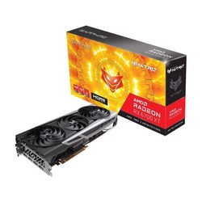
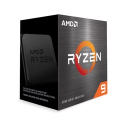
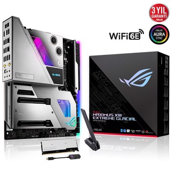

Urunler
1. SAPPHIRE NITRO+ AMD Radeon™ RX 6700 XT Grafik Kartı, canlı görseller ve mükemmel kalitede
soğutma çözümleri ile çığır açan grafikleri bir araya getirmek isteyen 1440p-lik üst düzey oyuncular için.
AAA oyun senaryolarının üstesinden gelmek için üstün bileşenlerle donatılmış NITRO+ AMD Radeon™ RX 6700 XT Grafik kartı,
inanılmaz bir oyun deneyimi için çok önemli bir bileşendir. Estetik tasarım, herhangi bir PC yapısına güzel bir entegrasyon olacaktır.
1229.17 $

2. Oyuncular ve içerik oluşturucular için dünyanın en gelişmiş işlemci mimarisine sahip olduğunuzda, olasılıklar sonsuzdur.
İster en son oyunları oynuyor olun, ister 3D modellemede en sıradışı gökdeleni tasarlıyor olun, her şeyi ve daha fazlasını yapabilmeniz için güçlü bir işlemciye ihtiyacınız var.
AMD Ryzen 5000 serisi masaüstü işlemciler, hem oyuncular hem de içerik oluşturucular ve tasarımcılar için çıtayı belirliyor.
675.93 $

3. ROG Maximus XIII Extreme Glacial, işbirliğine dayalı bir mühendislik harikasıdır. Intel® Z590 platformunun sunduğu her şey, en yeni ROG geliştirmeleriyle birlikte,
EK® UltraBlock-un sıvı soğutma rehberliği altında mutlak bir uyumla bir araya geldi. 11.Nesil Intel® işlemciler için en iyisi karşınızda.
1.909,47 $

4.Çok çekirdekli çağda, DDR5-in benzeri görülmemiş işlem hızı, üst düzey CPU'nuzun verileri kolaylıkla hızlı bir şekilde almasını sağlar. İster oyun oynayın, ister içerik oluşturun,
100 sekme açın veya çoklu görev yapın, bilgisayarınız karmaşık görevleri hiç olmadığı kadar hızlı bir şekilde gerçekleştirebilir.
557,26 $